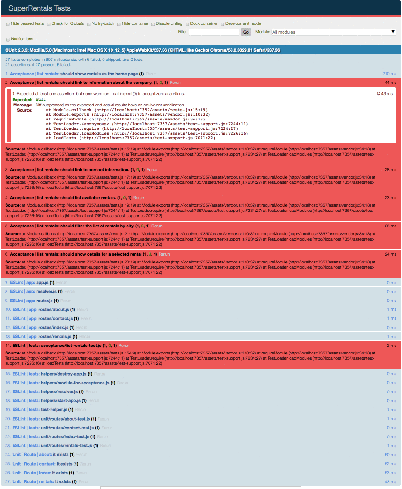

ルートとテンプレート 編集
Super Rentalsのトップページに物件一覧を表示します。トップページからはAboutページとお問い合わせページに行けるようにしましょう。
Aboutルート
まず、「about」ページを構築しましょう。
Emberでは、URLを使用して訪問できる新しいページを作成する場合、Ember CLIを使用して「ルート」を作成する必要があります。 Emberアプリの構造の概要は、コアコンセプトページの図を参照してください。
Emberのルートジェネレータを使用してaboutルートを作りましょう。
1 |
ember generate route about |
または短く、
1 |
ember g route about |
注: ember help generateを実行すると、作成できる他のEmberリソースも一覧表示されます。
ジェネレータが以下のように出力します。
1 2 3 4 5 6 7 |
installing route create app/routes/about.js create app/templates/about.hbs updating router add route about installing route-test create tests/unit/routes/about-test.js |
Emberルートは3つの部分で構築されています。
- Emberルータ(
/app/router.js)内のエントリ(ルート名と特定のURIとの間をマッピングします) - そのルートがロードされたときに何が起こるべきかを設定するルートハンドラファイル
(app/routes/about.js) - ルートテンプレート。ページに表示する実際のコンテンツ
(app/templates/about.hbs)
/app/router.jsを開くと、aboutルートの新しいコード行が表示され、Router.map関数内にthis.route('about')が呼ばれていることが確認できます。
その行は、ユーザーが /aboutに移動したときにEmberルータに/app/routes/about.jsファイルを実行するよう指示します。
| app/router.js | |
1
2
3
4
5
6
7
8
9
10
11
12
13 |
import EmberRouter from '@ember/routing/router'; import config from './config/environment'; const Router = EmberRouter.extend({ location: config.locationType, rootURL: config.rootURL }); Router.map(function() { this.route('about'); }); export default Router; |
aboutページには、静的なコンテンツだけの表示に留めるため、/app/routes/about.jsルートハンドラファイルに手を加える必要はありません。代わりに、テンプレートファイル(/app/templates/about.hbs)を開き、Super Rentalsに関する情報を追加します。
ember serve(またはember server、あるいは短くember s)でEmber開発サーバを起動し、 http://localhost:4200/aboutに行って実際のページを確認してください。
Contactルート(お問い合わせ)
次に、問い合わせ先の詳細を含む別のルートを作成しましょう。 もう一度、ルートを生成するところから始めます。
1 |
ember g route contact |
ここでもまた、app/router.jsに新しいcontactルート(エントリ)を追加し、app/routes/contact.jsにルートハンドラを生成します。
ルートテンプレート /app/templates/contact.hbsに、問い合わせ先の詳細を追加しましょう。
http://localhost:4200/contactに行くと、お問い合わせページが表示されます。
リンクと{{link-to}}ヘルパーのナビゲーション
サイト内を移動するのが今のところ少し面倒なので、簡単にしましょう。 aboutページにお問い合わせページへのリンクと、お問い合わせページにaboutページへの対応するリンクを貼り付けます。
Emberが提供する {{link-to}}ヘルパーを使用すれば、ルート間のリンクは簡単にできます。
about.hbsファイルを以下のように変更してください。
{{link-to}}ヘルパーに、リンクしたいルートの名前contactを渡しています。
http://localhost:4200/aboutにアクセスしてaboutページを開き、お問い合わせページへリンクされているか確認しましょう。

お問い合わせぺージからAboutにリンクして、aboutとcontactの間を行き来できるようにします。
rentalsルート(物件一覧)
aboutとcontactページに加えて、ユーザーが物件を見渡せるように物件一覧を表示したいと思います。rentalsという3番目のルートを追加しましょう。
1 |
ember g route rentals |
そうしたら、まずは作成されたテンプレート(/app/templates/rentals.hbs)を以下のように置き換えてください。
後程、実際の賃貸物件を追加しますので、またこのテンプレートに戻ってきます。
インデックスルート
3つのルートを用意して、サイトのルートURI(/)へのリクエストを処理するインデックスルートを追加する準備が整いました。
物件一覧のページをアプリケーションのメインページにしましょう。既にルートは作成済みですので、インデックスルートをrentalsルートにリダイレクトすれば完了です。
aboutとcontactページで行ったのと同じように、まず indexという新しいルートを生成します。
1 |
ember g route index |
ルートジェネレータがいつも通りに出力しているのが見えるはずです。
1 2 3 4 5 |
installing route create app/routes/index.js create app/templates/index.hbs installing route-test create tests/unit/routes/index-test.js |
これまでに作成した他のルートハンドラとは異なり、indexルートは特別です。ルータのマッピングにエントリを必要としません。
なぜエントリが必要とされないのかについては、この後のネストしたルートの作成で学びます。
ユーザーがルート(/)URLにアクセスしたときにやりたいことは、 /rentalsへのリダイレクトです。
これを行うために、インデックスルートハンドラにbeforeModelと呼ばれるルートライフサイクルフックを実装してコードを追加します。
各ルートハンドラには、「ライフサイクルフック」というものがあります。これはページのロード中に決まったタイミングで呼び出される関数です。
beforeModelは、modelフックでデータが取得される前、ページが描画されるより前に呼び出されます。
モデルフックの説明については、次のセクションを参照してください。
インデックスルートハンドラでは、replaceWith関数を使います。
replaceWith関数はルートのtransitionTo関数と似ていますが、transitionToはブラウザの履歴に追加されるのに対し、replaceWithは履歴の現在のURLが置き換わります。
rentalsルートがトップページとして機能するようにしたいので、replaceWith関数を使用します。
インデックスルートハンドラのbeforeModelフック内でreplaceWith関数を実行するように変更します。
| app/routes/index.js | |
1 2 3 4 5 6 7 |
import Route from '@ember/routing/route'; export default Route.extend({ beforeModel() { this.replaceWith('rentals'); } }); |
これで、/でルートルートにアクセスすると、 /rentals URLが読み込まれるようになりました。
ナビゲーション付きバナーの追加
アプリの各ページに各ルートへのリンクを個別に追加はせず、共通のヘッダーをページ上部に追加して、アプリのタイトルとナビゲーションバーを表示するようにしたいと思います。
すべてのページに何かを表示するには、アプリケーションテンプレート(上記で編集したもの)を使用できます。
もう一度/app/templates/application.hbsを開き、内容を次のように置き換えましょう。
ほとんど見たことがあるものですが、<div class="body">の下にある{{outlet}}は初めてですね。
{{outlet}}ヘルパーは現在のルート(about
またはcontact)のコンテンツを置く場所をEmberに伝えます。
訳注: outletは差込口(コンセント)という意味です。
これでabout、contact、rentalsのページ間を移動できるようになったはずです。
確認してください。
ここから先の部分は読み飛ばして次のページに行っても構いません。 読み進めれば、追加したばかりの新機能を自動テストする方法を学べます。
アプリケーションテストの実装
アプリケーションにいくつかページを追加したので、そのテストを構築する方法について説明します。
前にプランニングページで説明したように、 Emberのアプリケーションテストは、ユーザーがアプリケーションとやりとりするようなやり方でテストを自動化します。
作成されたアプリケーションテストファイル(/tests/acceptance/list-rentals-test.js)を開いてくと、そのページにアクセスできることがテストされているのがわかります。
まず、 /を訪問すると /rentalsに正しくリダイレクトされることをテストします。 Emberの visitヘルパーを使用し、リダイレクトが発生し、現在のURLが/rentalsであることを確認します。
| /tests/acceptance/list-rentals-test.js | |
1 2 3 4 5 6 7 8 9 10 11 12 |
import { module, test } from 'qunit'; import { visit, currentURL } from '@ember/test-helpers'; import { setupApplicationTest } from 'ember-qunit'; module('Acceptance | list rentals', function (hooks) { setupApplicationTest(hooks); test('should show rentals as the home page', async function (assert) { await visit('/'); assert.equal(currentURL(), '/rentals', 'should redirect automatically'); }); }); |
コマンドラインで ember test --serverと打ってテストを実行します(ember t -sと省略可)。
失敗したテストが7件から6件(アプリケーションテストが5、ESLintが1)になったはずです。 また、「Acceptance | list rentals」という項目を選択して、実行するテストを指定できます。 テストUIの「Module」というラベルが付いているフォームを使います。
「Hide passed tests」を切り替えて、パスしたテストケースとまだ失敗しているテストを表示することもできます（まだ作成していないため）。

Emberのテストヘルパー
Emberは、ページのアクセス、フィールドの入力、リンク/ボタンのクリック、ページの表示の待機など、一般的なタスクを簡単にするためのさまざまなアプリケーションテストヘルパーを提供しています。
よく使うヘルパーをいくつか紹介します。
visit- 指定されたURLを読み込むclick- 画面の特定の部分をクリックするcurrentURL- 現在表示されているページのURLを返す
これらのヘルパーをアプリケーションテストにインポートしましょう。
| /tests/acceptance/list-rentals-test.js | |
1 2 3 4 5 |
import { click, currentURL, visit } from '@ember/test-helpers' |
Aboutとお問い合わせページにアクセスしてテストする
次に、ユーザーがトップページにアクセスし、リンクをクリックし、別のページにアクセスするのをシミュレートするコードを追加します。
| /tests/acceptance/list-rentals-test.js | |
1 2 3 4 5 6 7 8 9 10 11 |
test('should link to about page', async function(assert) { await visit('/'); await click(".menu-about"); assert.equal(currentURL(), '/about', 'should navigate to about'); }); test('should link to contacts page', async function(assert) { await visit('/'); await click(".menu-contact"); assert.equal(currentURL(), '/contact', 'should navigate to contact'); }); |
上記のテストでは、assert.equal()を使って第1引数と第2引数が互いに等しいかを確認しています。
等しくなければテストは失敗します。
3番目の引数は省略可能で、テストが失敗した時のメッセージを指定します。
テストでは、2つのヘルパー(visitとclick)を呼んでいます。
Emberはこれらの呼び出しを行うときにいくつかのことを行いますが、Emberの非同期テストヘルパーによって、その複雑さを隠しています。
ember testを実行したままにしておくと、自動的に更新され、ナビゲートに関連する3つのテストがパスされたことが示されます。
以下のスクリーンレコーディングでは、テストを実行し、「Hide passed tests」の選択を解除し、モジュールをアプリケーションテストに設定し、合格した3つのテストを見せています。